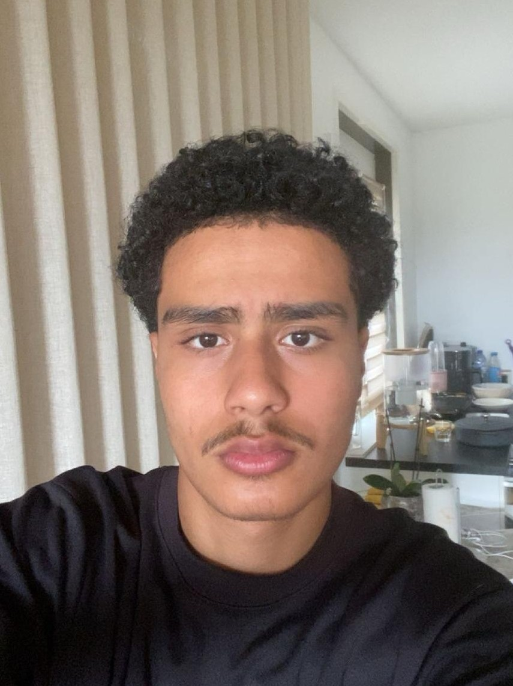

Achraf
Rhezila

Ik ben Achraf, 16 jaar en ik studeer Software Development aan TCR Schiedam. Op deze website laat ik mijn projecten, vaardigheden en ontwikkeling zien.
TCR Schiedam
Software Development
Klas 1A
Tijdens mijn opleiding leer ik websites en digitale producten maken. Ik leer onder andere HTML, CSS, design en werken met verschillende digitale tools.
| Tools | Webdevelopment |
|---|---|
| Figma | HTML |
| GitHub | CSS |
| Visual Studio Code |
HTML & CSS — Opdrachten 2.1 t/m 4.3
Basisopdrachten over HTML en CSS, met focus op structuur, opmaak en vormgeving.
HTML & CSS — Opdrachten 5.1 t/m 7.1
Vervolgopdrachten waarin ik mijn HTML- en CSS-kennis verder heb toegepast.
Rekenen & Engels
Opdrachten en oefeningen voor Rekenen en Engels.
Skills & Beginopgaven
Beginopgaven waarmee ik mijn basisvaardigheden en kennis heb ontwikkeld.
1. Waarom heb je gekozen voor Software Development?
Ik heb voor Software Development gekozen omdat ik het een interessante opleiding vond.
2. Hoe ziet een normale school- of werkdag eruit?
Ik begin met een opdracht. Daarna werk ik achter mijn laptop en probeer ik de opdracht af te maken.
3. Welke programma's en programmeertalen gebruik je het meest?
Ik gebruik Visual Studio Code, GitHub en Figma. Voor websites werk ik vooral met HTML en CSS.
4. Wat vind je het leukste aan Software Development?
Ik vind het leuk dat je zelf iets kunt maken en aan het einde een resultaat hebt.
5. Wat vind je het moeilijkste en hoe ga je daarmee om?
Soms is het lastig als mijn code niet werkt. Dan kijk ik waar de fout zit en zoek ik naar een oplossing.